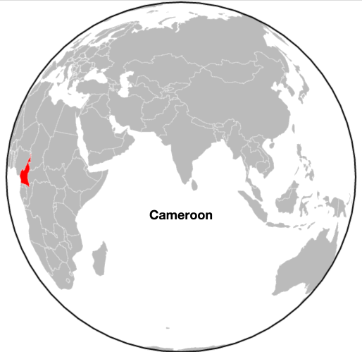

D3 Locator Maps
that move with the page
Why a locator map?
It's a great way to give context to a larger story and can double as an interesting design element.

Bostock's World Tour
Waypoints
a js library that makes it easy to trigger functions when you scroll to an element on the page
$('h5').waypoint(function(){
var index = $(this).attr('id');
// topojson object
var country = countries[index];
transition(country);
},
// accounts for sticky header
{ offset: 60 }
);
function transition(country){
d3.transition().duration(1250)
.each('start', function(){
projection.translate([width, height]);
// adds the label when the transition begins
title.text(country.title);
})
.tween('rotate', function(){
// center map on the country
var p = d3.geo.centroid(country),
r = d3.interpolate(projection.rotate(), [-p[0], -p[1]]);
})
}
Contact Me
- Email: colleenmcenaney@gmail.com
- Github: cmcenaney
- Presentation: cmcenaney/tokyojs
- Twitter: colleenmcenaney